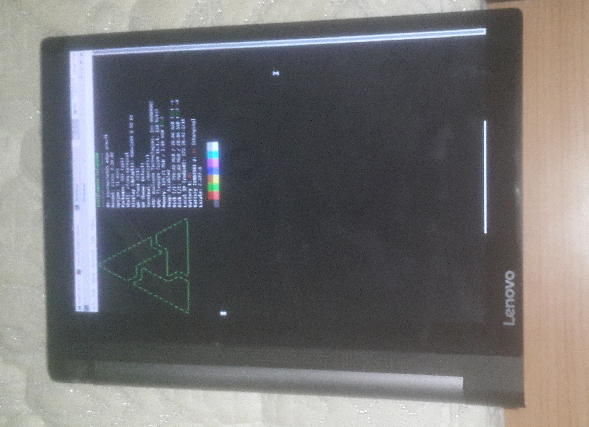

Lenovo Yoga Tab 3 10 LTE/WiFi (lenovo-lxf-p5100)
|
 xfce4 with pmos on downsteam kernel | |
| Manufacturer | Lenovo |
|---|---|
| Name | Yoga Tab 3 10 LTE |
| Codename | lenovo-lxf-p5100 |
| Model | yt3-x50y,yt3-x50l,yt3-x50m |
| Released | 2016 |
| Type | tablet |
| Hardware | |
| Chipset | Qualcomm Snapdragon 210 (MSM8909) |
| CPU | Quad-core 1.3 GHz Cortex-A7 |
| GPU | Adreno 304 |
| Display | 800 x 1280 10.1" IPS LCD |
| Storage | 16GB/32 GB |
| Memory | 2 GB |
| Architecture | armv7 |
| Software | |
| Original software | Android |
| Original version | 5.1 |
| Extended version | 6 |
| postmarketOS | |
| Category | testing |
| Pre-built images | no |
| Mainline | yes |
{kind=link}
| Flashing |
Works
|
|---|---|
| USB Networking |
Broken
|
| Internal storage |
Works
|
| SD card |
Works
|
| Battery |
Broken
|
| Screen |
Partial
|
| Touchscreen |
Partial
|
| Stylus |
Partial
|
| Multimedia | |
| 3D Acceleration |
Broken
|
| Audio |
Broken
|
| Camera |
Broken
|
| Camera Flash | |
| Connectivity | |
| WiFi |
Works
|
| Bluetooth | |
| GPS | |
| Modem | |
| Calls | |
| SMS | |
| Mobile data | |
| Miscellaneous | |
| FDE | |
| USB OTG |
Partial
|
| HDMI/DP | |
| Sensors | |
| Accelerometer |
Broken
|
| Magnetometer | |
| Ambient Light | |
| Proximity | |
| Hall Effect | |
| Haptics | |
| Barometer | |
| Manufacturer | Lenovo |
|---|---|
| Name | Yoga Tab 3 10 WiFi |
| Codename | lenovo-lxf-p5100 |
| Model | yt3-x50f |
| Released | 2016 |
| Type | tablet |
| Hardware | |
| Chipset | Qualcomm Snapdragon 212 (APQ8009) |
| CPU | Quad-core 1.3 GHz Cortex-A7 |
| GPU | Adreno 304 |
| Display | 800 x 1280 10.1" IPS LCD |
| Storage | 16GB/32 GB |
| Memory | 2 GB |
| Architecture | armv7 |
| Software | |
| Original software | Android |
| Original version | 5.1 |
| Extended version | 6 |
| postmarketOS | |
| Category | testing |
| Pre-built images | no |
Status: currently no one has worked it on the Wi-Fi model
The Lenovo Yoga Tab 3 10 LTE/WiFi is it interesting tablet that has a stand.There are QR code sticker that has a code name printed on it.The sticker is sticked onto the motherboard.All Lenovo Yoga Tab 3 10 LTE/WiFi varian code name appear to have lxf_p5100 prefix and a lot of different suffix.
Known suffixes :
_B01 : Model Name yt3-x50m,LTE Varian
_J01 : Model Name yt3-x50l,LTE Varian
_L01 : Model Name yt3-x50f,WIFI Varian
How to enter flash mode (fastboot)
adb reboot bootloader = fastboot mode (it will show little tux on screen)
or Press and hold Power + Volume Down until you see Lenovo logo
How to enter flash mode (edl)
Press and hold Power + Volume up while you plug it to a pc
How to enable developer option at setting
1. click build number 7 time at the about device in setting
How to unlock bootloader
0. Enable Allow bootloader to be unlocked at the developer option in setting
1. Boot to fastboot mode
2. fastboot oem unlock-go
3. wait until it has wipe every thing in userdata partition
Status
Downstream : The screen work with dtb that is extracted from the stock Android 's boot otherwise the screen would not work. (it is caused by #Missing Device Tree Changes)
Mainline : lk2nd boot (See lk2nd!434),pm os boot
What work?
Mainline
| Feature | Components | Status | Driver | Note |
|---|---|---|---|---|
| Display | MDP 3 Panel : boent35523b_800p, auoOTM1287A_800p |
P | N | Mainline lack of MDP 3, Panel driver but the panel driver can be generated from downstream
simple buffer work. |
| GPU | Adreno 304 | N | P | Adreno 3XX is supported by freedreno but it dont support 304. Also gpu required iommu to work but iommu dont work |
| WiFi | wcn3620 | Y | Y | wcn3620 is a chip that responsable for BT,WiFi,FM.This chip found in many Qualcomm Snapdragon 210 (MSM8909) Qualcomm Snapdragon 410 (MSM8916) devices. |
| Bluetooth | ? | |||
| FM | ? | ? | ||
| Modem | ? | ? | ||
| Audio Codec | N | N | ||
| Charger | smb358 Charger | N | Y | This Ic handle USB power out/mode switching,.Mainline has driver for it but the only current developer (with help from User:wonderfulShrineMaidenOfParadise couldnt get it to work. |
| Power management | pm8909 | Y | Y | |
| Battery Temperature Sensor | ? | ? | It is connected to pm8916.
Also the only current developer's unit lack of Battery Temperature Sensor.(See the BAT_TEMP pin at below) Untested but mainline lack of temperature sensor driver it seem ? |
|
| Fuel Gauge | bq27xxx | N | Y | cant be tested , the only current developer's unit lack of Fuel Gauge. Also the mainline device tree is also missing related node.
The downstream kernel has used bq27x00 driver from ancient mainline kernel.However that driver seem be to has been replaced by bq27xxx |
| Rear Camera | N | N | ||
| Front Camera | N | N | ||
| Magnetometer Sensors | ak09911 | Y | Y | Managed to get some output via sysfs so it work |
| ACCELEROMETER Sensors | Bochs BMA223 | N | N | No Mainline driver |
| Light Sensors | ELAN EPL2102 light sensor | N | N | lack of mainline driver,rare chip |
| Touchscreen/Stylus | hideep-ts-i2c | P | P | It work great in kernel level (See libinput#1046) |
| Buttons | Gpio button/pm8941-resin/pm8941-pwrkey | Y | Y | |
| LEDs | sn3191 | Y | Y | Power Led |
| USB Controller/Phy | ChipIdea USB Controller /Qualcomm USB HS Phy | P | Y | guest mode/mode switching dont work due to smb358 but host mode work |
Downsteam
Display
Work (expect for rotation)
Backlight
Sometime the backlight is off druing boot.Overall it work.
Touchscreen
Work
Usb
Usb Netwoking (Guest Mode)
Work
Host Mode
Host made work,the device is able to switch to host mode when a otg cable is plugged into the device.
Power Out
sometime it work, sometime it dont work?
Fuel Gauge
Seem to work but untested
Charger
Seem to work
Missing Device Tree Changes
Here is the search results from searching 800p in a folder that contain all the dtb that is extracted from the stock android 's kernel :
# grep -rnw ./ -e '800p' ./13_dtbdump_Qualcomm_Technologies,_Inc._MSM8909_QRD_SKUE.dtb:25729:zauoOTM1287A 800p video mode dsi panel ./13_dtbdump_Qualcomm_Technologies,_Inc._MSM8909_QRD_SKUE.dtb:26365:zboeNT35523B 800p video mode dsi panel ./35_dtbdump_Qualcomm_Technologies,_Inc._MSM8208_1GB_QRD_SKUE.dtb:25034:zauoOTM1287A 800p video mode dsi panel ./35_dtbdump_Qualcomm_Technologies,_Inc._MSM8208_1GB_QRD_SKUE.dtb:25670:zboeNT35523B 800p video mode dsi panel ./32_dtbdump_Qualcomm_Technologies,_Inc._MSM8208_QRD_SKUE.dtb:25033:zauoOTM1287A 800p video mode dsi panel ./32_dtbdump_Qualcomm_Technologies,_Inc._MSM8208_QRD_SKUE.dtb:25669:zboeNT35523B 800p video mode dsi panel ./05_dtbdump_Qualcomm_Technologies,_Inc._MSM8909_QRD_SKUE.dtb:25728:zauoOTM1287A 800p video mode dsi panel ./05_dtbdump_Qualcomm_Technologies,_Inc._MSM8909_QRD_SKUE.dtb:26364:zboeNT35523B 800p video mode dsi panel
boent35523b_800p and auoOTM1287A_800p are panel that used in the device. According to that it seem there are few device tree has the device tree nodes for those two panels.
There are two dsti file in the downsteam kernel from lenovo that contain the device tree nodes for those two panels .However , none of the dts / dtsi file has used those 2 dsti file thus it seem some device tree changes that made by lenovo is missing in the kernel source.
Test pin/Soldering Point
There are a lot of soldering point/test pin on the motherboard. A lot of them is labelled.
| Label | Component | Description |
|---|---|---|
| BAT_TEMP | Battery | Battery temperature sensor |
| VBAT+ | Battery | Battery positive |
| GND | Battery | Battery ground |
| SCL | Touch screen/Fuel gauge | There are 2xSCL bus test pin on on the board.
The one that near the battery socket is SCL pin of the fuel gauge 's i2c bus The other one is the is SCL pin of the touch screen 's i2c bus |
| SDA | Touch screen/Fuel gauge | There are 2xSDA test pin on on the board.
The one that near the battery socket is SDA pin of the fuel gauge 's i2c bus The other one is the is SDA pin of the touch screen 's i2c bus |
| PWR | Buttons | Power button |
| VOL+ | Buttons | Volume up button |
| VOL- | Buttons | Volume down button |
| LEDR | LEDs | Power LED positive |
| DP | Micro USB | Data Positive |
| DM | Micro USB | Data Negative |
| VBUS | Micro USB | Usb Power Negative |
| USB_ID | Micro USB | USB_ID pin of micro USB |
| Rx | Uart | Uart pin of Rx |
| Tx | Uart | Uart pin of Tx |
| VDD | Touch screen | VDD pin of the Touch screen , the main power source of the Touch screen |
| VID | Touch screen | VDD pin of the Touch screen , the main IO voltage of the Touch screen |
| INT | Touch screen | Interrupt pin of the Touch screen , It is connected to gpio 13 of the msm8909 |
| RST | Touch screen | Reset pin of the Touch screen , It is connected to gpio 12 of the msm8909 |
Contributors
Chaosleo07
Maintainers
Users owning this device
- Exkc (Notes: _B01 with removable battery mod and missing BMS , fuel gauge or any kind of battery safety feature.)
Gallery
Tablet on Home Screen at around 6pm
lk2nd boot
{kind=link}
{kind=link}